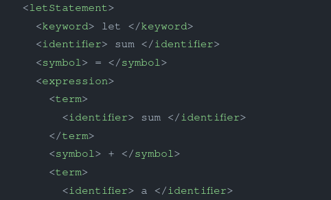

Introduction
The purpose of this project is to implement syntax analysis function of the jack programming language. Method includes using regualar expression to tokenize the jack program then applying contex free grammer to parse the XML formatted file generated after tokenizing.
Description
Keyword Definition and Classification
For jack programming language there are five types including keywords, symbols, integer constants, string constants, and identifiers.
- keywords: class types, variable types, subroutine types, statement types, and some constants
- symbols: {, }, (, ), [, ], ., ,, ;, +, -, *, /, &, |, <, >, =, ~
Tokenizing
python
def element_toekenize_process(self, element):
if self.string_gap:
if element.count('"') %2 != 0:
self.imperfect_string_concatenate(element)
self.string_gap = False
self.imperfect_string = ''
else:
self.imperfect_string += (element + ' ')
elif self.is_keyword(element):
self.write_xml(TOKEN[0], element)
elif self.is_symbol(element):
self.write_xml(TOKEN[1], element)
elif self.is_integer(element):
self.write_xml(TOKEN[2], element)
elif self.is_string(element):
if self.is_string_gap(element):
self.imperfect_string = (element[1:] + ' ')
self.string_gap = True
else:
self.write_xml(TOKEN[3], element[1:])
elif self.is_pure_identifier(element):
self.write_xml(TOKEN[4], element)
if element not in self.identifier:
self.identifier.append(element)
else: # symbol+token or identifier
self.handle_symbol_complex(element)
Code Copied!
Since we first read the program line by line and separate the possible keywords by space, there are some issues shoud be noticed such as the the string contains space or punctuation marks. To see the class I define or the tokenizing rules, check the reference of my github repo.
Parsing
The segment of code in parsing procss is relatively large comparing to the tokenizing because for different keyowords we need to customize the parsing rule and also some exception to handle. Roughly speaking, parsing is kind of process similar to the classification and be careful for some exceptions .
Note: My code may be too dirty since I simply handle the exception if there is any.
Testing
In this part, I write a simle comparative python program(text_compare.py) to compare the result(director: analysis resutl) with the answer(directory: test_program) if ther is any inconsistency, program will terminated and show the position(line numbers).
shell
python main.py ../test_program/ArrayTest/Main.jack
Code Copied!
Result
